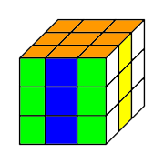
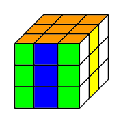

FUN PATTERNS PAGE
 Welcome to my Fun Patterns Page. Here, you'll be able to explore some basic patterns that you can make with your cube. The instructions for making these patterns are similar to those on my first page. Before you make any of these patterns, your Rubik's Cube must start out solve before making each pattern. In order to change a pattern back, do the inverse of that pattern. If you have any more questions, go to my first page and go to the section, Understanding the Instructions.
Return to homepage.
Welcome to my Fun Patterns Page. Here, you'll be able to explore some basic patterns that you can make with your cube. The instructions for making these patterns are similar to those on my first page. Before you make any of these patterns, your Rubik's Cube must start out solve before making each pattern. In order to change a pattern back, do the inverse of that pattern. If you have any more questions, go to my first page and go to the section, Understanding the Instructions.
Return to homepage.
Checkerboard Pattern


Eyeball Pattern

Four Line Pattern
 
Return to Top.

Return to Top.